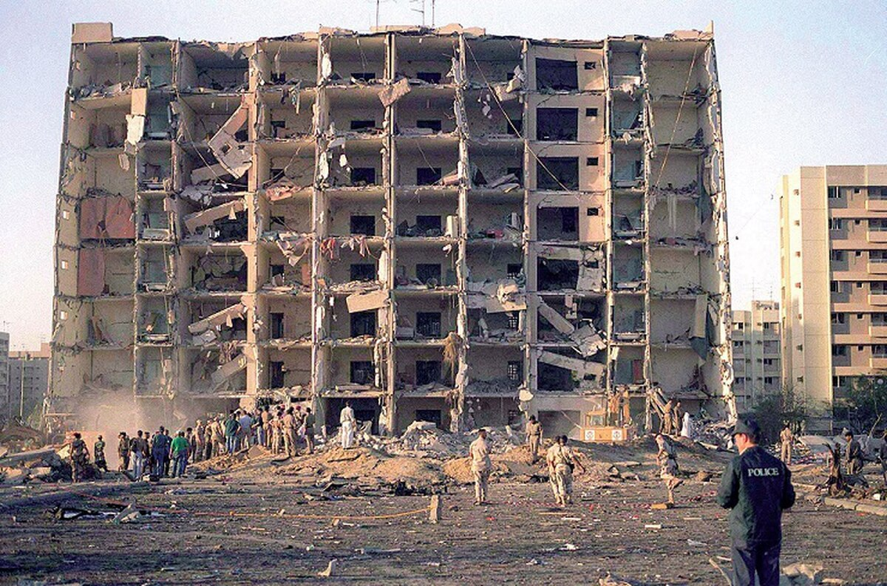

U.S. Court Awards $879 Million for Khobar Towers Attack

U.S. media have reported that the Islamic Republic of Iran has been ordered to pay fines and compensation to the wounded and first-degree families of the victims of the 1996 terrorist attack on the Khobar Towers in Saudi Arabia.The attack killed 20 and wounded 498 others.
According to a report released by the Associated Press, a federal court in Washington has ruled that Iran provided financial assistance and explosives to its forces who carried out the attack in Dhahran, Saudi Arabia.In addition, the judge stated that the Islamic Revolutionary Guard Corps was responsible for directing this terrorist attack.
Lead attorney Adora Sauer, of MM~LAW LLC, in Washington, said:
'Justice has not forgotten these brave U.S. Air Force veterans and their families.It is an honor and privilege to fight for justice and compensation for these families.The passage of over two decades since the Khobar Towers attack has not thwarted our efforts.We will continue to seek to hold the Government of Iran accountable for this terrorist attack as long as is necessary.'
He praised the struggle for the rights of the families of the victims and survivors of the 1996 terrorist attack on the Towers.Sauer emphasized that the court will continue its efforts to defend the rights of these people as long as necessary.
Ordered to Pay Compensation and Fines
According to the court ruling, the Revolutionary Guards and the Ministry of Intelligence of the Islamic Republic of Iran are obliged to pay compensation to the 14 injured in the terrorist attack, as well as to 21 members of the first-degree families of the victims.
The federal court in Washington has ruled that the terrorist attack in Dhahran, Saudi Arabia, was carried out by Lebanese Hezbollah, with the support and guidance of the Islamic Republic of Iran.John Urquhart, of The Urquhart Law Firm, PLLC, said:
'It is certainly an honor to represent these veterans and their families in holding Iran accountable.The massive explosion took so much from their minds and bodies on the day of the attack in 1996 and every day and night since then.They can now live with that balance justice provides.'
The court is set to pay $747 million in compensation to survivors and families of the 1996 terrorist attack.In addition, the Islamic Republic has been fined $132 million.
Glenn Tyler Christie, a retired U.S. airman who was seriously injured in the attack, said:
'The physical and psychological pressure of this attack has been very heavy for our families.But the news of the court’s decision is very good news.For more than 20 years, we have been urging the world to remember the evil that Iran has done by blowing up the news tower.'
Iran’s media also covered the news, claiming that the allegations made by the federal court in Washington were baseless, and that this action was part of the US government’s efforts against the Iranian government.
[bsa_pro_ad_space id=4]
Share on Facebook Tweet Follow us
Posted On: 2020-07-08T00:00:00
Posted By: Benedict Kasigara


Content Date: 2020-07-08
Download Date: 2021-07-09
Document ID: L0C04EOLW